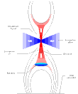
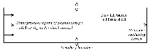
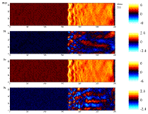
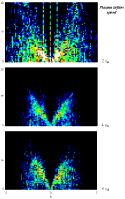

Solar flares are explosive energy release events in the Sun's corona. Flares are widely observed, but their micro-physics is poorly understood. Relativistic electrons with energies greater than 100 keV are observed within solar flares by their hard X-ray (HXR) emission. Yohkoh observations show HXR sources at the flare footpoints. There is also evidence of HXR emission above the thermal soft X-ray (SXR) flare (Masuda et al. 1995).
Solar flare models have been developed which attempt to explain HXR emission. A commonly employed mechanism for accelerating electrons to the necessary energies is quasi-perpendicular shock acceleration. An example of this is in Yokoyama and Shibata (1996) who attempt to simulate X-ray jets using a resistive MHD code. Their flare model employs a reconnection site above the flare itself (figure 1). The reconnection outflow forms a fast shock upon collision with the flare's magnetic field. The outflow also contains slow shocks which, although they are unlikely to be effective in accelerating particles to high energies, may energise the electron population before it enters the fast shock.
A major difficulty in constructing realistic flare models is the production of relativistic electrons on short time scales. Many models rely on shock waves to accelerate them. Whilst a number of mechanisms for this have been proposed, there is no agreement as to which of them are viable. This results from the fact that electrons have less opportunity to interact with the shock than ions, which have a significantly larger gyroradius.
We are attempting to determine the acceleration mechanism for energetic solar flare electrons using 2-D hybrid simulations of quasi-perpendicular shock waves. We also hope to determine the physical processes responsible for causing ripples running along the shock front. Other planned work includes writing a 3-D hybrid code which will allow us to study, for example, shock formation at reconnection sites.

Figure 1 A flare model featuring a fast shock, after Yokoyama and Shibata (1996)
This model was derived from simulations of coronal X-ray jets using a resistive MHD code.
The Rankine-Hugoniot conditions provide a macroscopic description of shocks in terms of conserved quantities. In order to examine the micro-physics and shock structure, however, it is necessary to abandon analytical methods and turn to numerical simulation.
The shock E and B fields are simulated using a scheme known as CAM-CL - Current Advance Method - Cyclic Leapfrog (Matthews 1994). The code gets around the problem of the electron time scale being two thousand times that for ions using the hybrid method. This means that the ions are treated as macro-particles moving within an electron fluid. The fluid, which is inertialess and has constant and uniform temperature, provides only charge neutrality, in addition to a pressure force on the ions. The scheme is self-consistent, meaning that the fields are calculated on the basis of the currents generated by the ions.
The results which I have used were produced by a pre-existing implementation of this code which is 2-D in space and 3-D in velocity. The boundary conditions are periodic in y. A flow of plasma enters from the left hand side of the box and a stationary perfectly conducting barrier on the right hand side generates the shock. The initial conditions are such that the flow is bounced off this barrier at the start of the simulation (figure 2). The code provides a good environment for testing shock acceleration once the shock front has cleared the influence of the right hand boundary (figure 3). The generation of fields in this way is the computing intensive part of the scheme; simulations take of the order of tens of hours.

Figure 2 The configuration of the simulation

Figure 3 A simulation in progress
These diagrams illustrate that we are dealing with non-MHD phenomena. The ripples along the shock front have wavelengths of the order of an ion gyroradius. Additionally, Alfvén ion cyclotron (AIC) and mirror mode waves are observed downstream (McKean et al. 1995). The dominant processes are kinetic in origin, which demonstrates the applicability of a hybrid code.
Ripples in the shock front manifest themselves as "blobs" of magnetic field moving along the shock ramp. They are particularly easily seen in Bx. The ripples must be driven by some form of instability, the precise nature of which is not currently known; one theory is that they may be driven by changes in ion properties across the shock (Winske and Quest 1988).
Power spectra of the Bx field component at the shock are shown in figure 4 for various plasma inflow speeds. The plots show the distribution of power in w-k space using a logarithmic scaling. They were produced by taking the Fourier Transform of slices of Bx field in the y-t plane with x fixed relative to the shock. No windowing was applied in the y direction, since the data are periodic. A Bartlett windowing function was applied in the t direction. These diagrams provide an effective method for finding the dispersion relation for the waves propagating at the shock front.

Figure 4 w-k power spectra (logarithmic scaling) at shock maximum - units as in table 2
Figure 5 shows that the group velocity of the shock ripples increases with Alfvén Mach number. The Alfvén Mach number is not the same as the plasma inflow velocity, since the shock propagates to the right in the simulation frame. Table 1 shows the correspondence between these quantities.
Figure 5 Graph showing how the group velocity of waves at the shock front maximum varies with shock Alfvén Mach number at qBn = 85°
Speeds are in units of the upstream Alfvén speed, vA.
The fact that the group velocity of the ripples increases with Mach number shows that the ripples are not caused by purely upstream processes, but are the result of an interaction between upstream and downstream phenomena. This would support the idea that ion gyroradius changes drive the ripples.
Figure 3 seems to show coupling between the ripples and downstream AIC waves. It seems that these waves may dominate activity at the shock front for low Mach numbers and low qBn. Initial results show that ripples exist only at fairly high values of qBn. At qBn = 75°, with a plasma inflow velocity of 2 vA, the amplitude of the ripples is significantly smaller than the qBn = 85° case. This may mean that ripples will not play a significant role in electron acceleration unless the flare geometry gives a clear preference for high qBn.
Acceleration in a quasi-perpendicular shock is primarily achieved via the shock drift (fast Fermi) mechanism. This means that particles are accelerated by the v×B electric field as they pass through the shock. Electron acceleration to high energies has been simulated using 1-D quasi-perpendicular shocks (Krauss-Varban, Burgess and Wu 1989), but these were found to give a very tight constraint on the angle between the upstream magnetic field and the shock normal, qBn. The difficulty is that the electron gyroradius is too small at non-relativistic energies to interact significantly with the shock front. One also finds that, unless qBn is very close to 90°, the high energy electrons are able to escape upstream. Ions have a significantly larger gyroradius, so it is relatively easy to produce a population of ions at around 1GeV.
It is our hope that effects such as the shock wave ripples, which are not present in 1-D simulations, will produce sufficient additional acceleration to make this a viable mechanism for the production of relativistic electrons over a large range of qBn.
Investigation of the distribution function at high energies presents a problem, since the tail of the distribution function will be represented by only a small proportion of our simulation particles. We get around this by generating the shock fields using the hybrid code and then passing a large number of test particles through these fields. This also allows us to conduct a variety of different experiments on each simulation run without having to generate the fields each time.
Our test particles are run using an explicit leapfrog method combined with an implicit field solver to provide fourth order accuracy for the particle move and second order accuracy in acceleration (Thomsen 1968; Krauss-Varban, Burgess and Wu 1989). The scheme's major advantage is that it conserves energy and magnetic moment well compared to a Runge-Kutta scheme. This is important in obtaining physically meaningful results. The fact that these are test particles means that we are able to use this computationally intensive scheme and take into account relativistic effects.
Our 2-D approach is more promising than previous 1-D models because the ripples running along the shock front will provide an additional mechanism for energy transfer to electrons (Gisler and Lemons, 1990). We hope to see Fermi acceleration by particle traps and resonance between the ripples and electrons. Trapping may also allow some of the electron population to interact with the shock front for longer periods. We also expect to see additional acceleration from the waves behind the shock (figure 3).
The aim of our work is to calculate the initial distribution functions required to produce high energy electrons as a function of qBn. This, combined with an investigation of the role of other mechanisms in pre-heating electrons, will allow us to assess whether shock acceleration is indeed a viable method for producing energetic electrons.
Finally, 1-D simulations including upstream Alfvén waves show an increase in the extent and number density of the high energy tail (Giacalone et al. 1992). In future, we intend to include waves in the plasma inflow to determine their effect on shock structure. This may help to generate ripples at lower values of qBn.
| Plasma inflow speed | Alfvén Mach number (MA) |
| 2 vA | 3.24 |
| 4 vA | 5.71 |
| 6 vA | 8.32 |
Table 1 Relationship between the plasma inflow speed and the shock Alfvén mach number
| Quantity | Normalisation |
| time | ion cyclotron time |
| speed | Alfvén speed |
Table 2 Simulation unit normalisations
{kind=link}
{kind=link}
{kind=link}
{kind=link}
{kind=link}